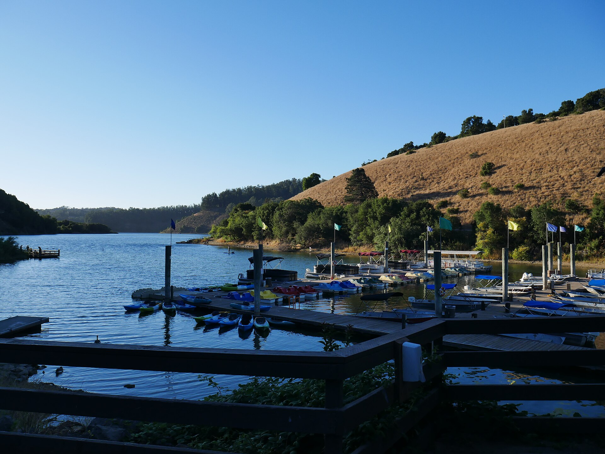

Below-waterline visual inspections
Dive Factor keeps this service line direct, visible, and easy to understand for buyers who want a confident next step.
Underwater / Aquatic Services
Dive Factor helps lake owners, marinas, and waterfront properties get a cleaner look below the surface with visual checks, practical documentation, and straightforward next-step conversations.
Who This Is For
What Is Included
Dive Factor keeps this service line direct, visible, and easy to understand for buyers who want a confident next step.
Dive Factor keeps this service line direct, visible, and easy to understand for buyers who want a confident next step.
Dive Factor keeps this service line direct, visible, and easy to understand for buyers who want a confident next step.
Dive Factor keeps this service line direct, visible, and easy to understand for buyers who want a confident next step.
Dive Factor keeps this service line direct, visible, and easy to understand for buyers who want a confident next step.
Dive Factor keeps this service line direct, visible, and easy to understand for buyers who want a confident next step.
This page does not present engineer-approved findings, structural certification, salvage-contractor claims, or insurance-approval claims.
How the Conversation Usually Works
Start with a call or email so Dive Factor can understand the water, structure, and urgency.
Set the right visual scope: hull, lift, dock, swim zone, running gear, or item-recovery target.
Complete the below-waterline check and return useful observations with photo or video support where applicable.
Use the findings to decide whether the next move is monitoring, repair coordination, partner follow-up, or another service lane.
Dive Factor positions this lane as a visual check and documentation service. It is built to help owners see conditions below the surface, not to replace engineering or certified structural review.
Lake Hartwell and Lake Keowee are the clearest public fit today. Lake Murray, Clarks Hill / Lake Thurmond, Coastal South Carolina, and Coastal Georgia stay in an expansion or review-gate posture.
Lost item recovery is presented as a targeted service when access, depth, visibility, and search conditions fit the request. It is not framed as a guaranteed outcome.
Related Resources

What a visual below-waterline check can cover, what it cannot, and why documentation matters.
Read the guide
A plain-English readiness piece for camps, marinas, pools, and waterfront teams.
Read the guideDirect Contact
Reach out directly to talk through fit, scope, scheduling, and the next best step for the service, training, or program you are considering.